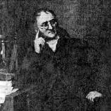
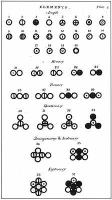

93 JOHN DALTON 1766-1844
John
Dalton-lah ilmuwan Inggris yang di awal abad ke-19
mengedepankan hipotesa atom ke dalam kancah ilmu
pengetahuan. Dengan perbuatan ini, dia menyuguhkan ide kunci
yang memungkinkan kemajuan besar di bidang kimia sejak saat
itu.
Supaya jelas, dia bukanlah orang pertama yang beranggapan
bahwa semua obyek material terdiri dari sejumlah besar
partikel yang teramat kecil dan tak terusakkan yang disebut
atom. Pendapat ini sudah pernah diajukan oleh filosof Yunani
kuno, Democritus (360-370 SM?), bahkan mungkin lebih dini
lagi. Hipotesa itu diterima oleh Epicurus (filosof Yunani
lainnya), dan dikedepankan secara brilian oleh penulis
Romawi, Lucretius (meninggal tahun 55 SM), dalam dia punya
syair yang masyhur "De rerum natura" (Tentang hakikat
benda).
Teori Democritus (yang tidak diterima oleh Aristoteles)
tidak diacuhkan orang selama Abad Pertengahan, dan punya
sedikit pengaruh terhadap ilmu pengetahuan. Meski begitu,
beberapa ilmuwan terkemuka dari abad ke-17 (termasuk Isaac
Newton) mendukung pendapat serupa. Tetapi, tak ada teori
atom dikemukakan ataupun digunakan dalam penyelidikan
ilmiah. Dan lebih penting lagi, tak ada seorang pun yang
melihat adanya hubungan antara spekulasi filosofis tentang
atom dengan hal-hal nyata di bidang kimia.
Itulah keadaannya tatkala Dalton muncul. Dia menyuguhkan
"teori kuantitatif" yang jelas dan jemih yang dapat
digunakan dalam penafsiran percobaan kimia, dan dapat dicoba
secara tepat di laboratorium.
Meskipun terminologinya agak sedikit berbeda dengan yang
kita gunakan sekarang, Dalton dengan jelas mengemukakan
konsep tentang atom, molekul, elemen dan campuran kimia. Dia
perjelas itu bahwa meski jumlah total atom di dunia sangat
banyak, tetapi jumlah dari pelbagai jenis yang berbeda agak
kecil. (Buku aslinya mencatat 20 elemen atau kelompok atom;
kini sedikit di atas 100 elemen sudah diketahui).
Meskipun perbedaan tipe atom berlainan beratnya, Dalton
tetap berpendapat bahwa tiap dua atom dari kelompok serupa
adalah sama dalam semua kualitasnya, termasuk "mass"
(kuantitas material dalam suatu benda diukur dari daya tahan
terhadap perubahan gerak). Dalton memasukkan di dalam
bukunya satu daftar yang mencatat berat relatif dari
pelbagai jenis atom yang berbeda-beda, daftar pertama yang
pernah disiapkan orang dan merupakan kunci tiap teori
kuantitatif atom.
Dalton juga menjelaskan dengan gamblang bahwa tiap dua
molekul dari gabungan kimiawi yang sama terdiri dari
kombinasi atom serupa. (Misalnya, tiap molekul "nitrous
oxide" (N2O) terdiri dari dua atom nitrogen dan satu atom
oxygen). Dari sini membentuk sesuatu gabungan kimiawi
tertentu --tak peduli bagaimana bisa disiapkan atau di mana
diperoleh-- senantiasa terdiri dari elemen yang sama dalam
proporsi berat yang sepenuhnya sama. Ini adalah "hukum
proporsi pasti," yang telah diketemukan secara eksperimentil
oleh Joseph Louis Proust beberapa tahun lebih dulu.
Begitu meyakinkan cara Dalton menyuguhkan teori ini,
sehingga dalam tempo dua puluh tahun dia sudah diterima oleh
mayoritas ilmuwan. Lebih jauh dari itu, ahli-ahli kimia
mengikuti program yang diusulkan oleh bukunya: tentukan
secara persis berat relatif atom; analisa gabungan kimiawi
dari beratnya; tentukan kombinasi yang tepat dari atom yang
membentuk tiap kelompok molekul yang punya kesamaan ciri.
Keberhasilan dari program ini sudah barang tentu luar
biasa.
Daftar berat atom Dalton
Adalah sulit menyatakan secara berlebihan arti penting
dari hipotesa atom. Ini merupakan pendapat sentral dalam
pengertian kita tentang bidang ilmu kimia. Tambahan lagi,
ini merupakan pendahuluan esensial dari umumnya fisika
modern. Hanya karena masalah peratoman sudah begitu sering
dibicarakan sebelum Dalton sehingga dia tidak dapat tempat
lebih tinggi dalam urutan daftar buku ini.

Tabel elemen dan kombinasinya dari John Dalton
Dalton dilahirkan tahun 1766 di desa Eaglesfield di
Inggris Utara. Sekolah formalnya berakhir tatkala umurnya
cuma baru tujuh tahun, dan dia hampir sepenuhnya belajar
sendiri dalam ilmu pengetahuan. Dia seorang anak muda yang
senantiasa memahami sesuatu lebih dulu dari rata-rata orang
normal, dan ketika umurnya mencapai dua belas tahun dia
sudah jadi guru. Dan dia menjadi guru atau pengajar pribadi
hampir sepanjang hidupnya. Ketika umurnya meningkat lima
belas tahun dia pindah ke kota Kendal, umur dua puluh enam
ke Manchester dan menetap di situ hingga napas penghabisan
keluar dari tenggorokannya tahun 1844. Mungkin perlu
diketahui, dia tak pernah kawin.
Dalton menjadi tertarik dengan meteorologi di tahun 1787
tatkala umurnya dua puluh satu tahun. Enam tahun kemudian
dia terbitkan buku tentang masalah itu. Penyelidikannya
tentang udara dan atmosfir membangkitkan minatnya terhadap
kualitas gas secara umum. Dengan melakukan serentetan
percobaan, dia temukan dua hukum yang mengendalikan perilaku
gas. Pertama, yang disuguhkan Dalton tahun 1801, menegaskan
bahwa volume yang diisi gas adalah proporsiona1 dengan
suhunya. (Ini umumnya dikenal dengan "hukum Charles" sesudah
ilmuwan Perancis yang menemukannya beberapa tahun sebelum
Dalton, tetapi gagal menerbitkan hasil penyelidikannya).
Kedua, juga disuguhkan tahun 1801, dikenal dengan julukan
"hukum Dalton" tentang tekanan bagian per bagian.
Menjelang tahun 1804, Dalton sudah merumuskan dia punya
teori atom dan menyiapkan daftar berat atom. Tetapi, buku
utamanya A New System of Chemical Philosophy baru terbit
tahun 1808. Buku ini membuatnya termasyhur, dan dalam
tahun-tahun berikutnya, bunga penghargaan ditabur orang di
atas kepalanya.
Secara kebetulan, Dalton menderita sejenis penyakit buta
warna. Keadaan ini malah membangkitkan keinginan tahunya.
Dia pelajari masalah itu, dan menerbitkan kertas kerja
ilmiah tentang buta warna, suatu topik yang pertama kalinya
ditulis orang!
Situs Web
- http://www.slcc.edu/schools/hum_sci/physics/whatis/biography/dalton.html
- http://www.chemheritage.org/EducationalServices/chemach/ppt/jd.html
|